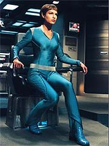
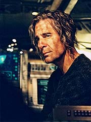
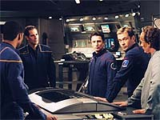

|

|
|
MANCHETE
DO EPISDIO
|
Segmento
psicolgico inicia a ltima
lgua da jornada pela Extenso
Episdio
anterior | Prximo
episdio
Sinopse:
Degra, o projetista da arma Xindi, acorda em uma nave auxiliar que est sob forte turbulncia.
Archer, o piloto, diz a Degra que algum est atirando neles, e quando o Xindi holha pela janela reconhece naves insetides atirando neles. Archer libera plasma nas naves e consegue escapar enquanto os insetides so imobilizados.
Archer diz a Degra que ambos escaparam de uma colnia penal insetide em que Degra havia sido interrogado pelos ltimos dois dias. Ele diz a Degra que eles compartilharam uma cela pelos ltimos trs anos e que a memria dele havia sido
afetada. Para convenc-lo Archer pede que ele arregace as mangas, e o capito faz o mesmo. Em ambos os braos h tatuagens idnticas. Enquanto Archer digita as coordenadas para um planeta, Degra olha para seu reflexo na janela da nave auxiliar, com uma expresso descrente.
Degra pergunta por que no pode se lembrar de nada. Archer explica que durante o interrogatrio os insetides usaram sanguessugas que secretam uma substncia que pode ser usada como um soro da verdade, mas muitas vezes causa perda de memria temporria. Archer pergunta sobre a ltima coisa de que ele se lembra, e Degra diz que estava em sua nave, testando o prottipo. Archer revela que sabotou a quemosita usada na arma e que por isso que ela falhou. Archer conta que, apesar da falha, a arma destruiu a Terra.
Ele prossegue dizendo a Degra que, aps a destruio de seu mundo, as velhas rivalidades Xindis
reemergiram. Os insetides usaram o ataque Terra como uma distrao para construir secretamente milhares de novas naves para atacar e dominar as outras espcies
Xindis.
 Degra pergunta a Archer como os dois poderiam ser amigos. O capito diz que levou tempo; quando os guardas primeiro os colocaram na mesma cela, eles tentaram matar um ao outro. Ento, um dia, quando Archer estava deitado na enfermaria da priso, ele decidiu parar de brigar com Degra e fazer uma proposta para que se ajudassem numa fuga.
Degra sugere que eles procurem pela Enterprise, mas Archer diz que, depois que ele foi tomado prisioneiro pelos insetides, eles plantaram explosivos em torno do ncleo de dobra e os detonaram, destruindo completamente a nave e matando a tripulao. Degra diz a Archer que os insetides sempre foram agressivos, mas que ele nunca havia pensado que eles fossem capazes de algo assim.
Ele comenta que eles destruram tudo pelo qual o Conselho trabalhou. Archer pergunta sobre o Conselho, e Degra conta que ele foi criado aps seu mundo natal ser destrudo para encontrar um planeta habitvel em que poderiam morar. Uma vez que descobriram a ameaa da Terra, colocaram seus planos de reunificao de lado, e Degra foi ordenado a projetar a arma. Ele disse que foi difcil para sua famlia. Ele tambm perguntou se sua famlia estava bem, e Archer disse que eles esto seguros e sugere que usem a nave para procur-los. Degra diz que a colnia em que eles estavam ficava perto de uma estrela gigante vermelha.
Mais tarde, enquanto Degra dorme, Archer injeta uma hypospray nele. T'Pol aperta um boto e a escotilha da nave auxiliar se abre. Archer sai e
Phlox, que est ao lado de Trip na baa de carga, diz que Degra estar inconsciente por pelo menos duas horas. Ele e Trip entram no Centro de Comando, onde T'Pol e Hoshi esto trabalhando. T'Pol diz que h sete gigantes vermelhas na vizinhana. Archer pergunta se podem rastrear uma instalao de armas, mas T'Pol diz que no a essa distncia.
Trs dias antes, a Enterprise havia retornado area em que o prottipo havia sido testado. Eles avistam uma nave Xindi e a atacam,
desabilitando-a. A tripulao aborda a nave para procurar informaes sobre a arma. Os Xindis conseguem deletar a maior parte dos dados, mas Hoshi encontra trechos de arquivos pessoais. Trip est ocupado estudando a configurao das naceles para que possam aprender o mximo possvel sobre a nave.
Archer interroga Degra sobre a arma. Quando o faz, as luzes falham e Malcolm reporta que a radiao do campo de destroos est afetando os sistemas da nave.
 Na enfermaria, Phlox diz a Archer que poderia levar semanas para sintetizar um soro da verdade. Ele acredita que seja possvel apagar as memrias mais recentes de
Degra. Isso d a Archer a idia de criar a fico que ele ento passa a interpretar para Degra na falsa nave auxiliar. A tripulao inteira colabora no estratagema, de acordo com suas especialidades.
Archer est de volta nave auxiliar, que sacode violentamente. Degra acorda e Archer diz a ele que esto passando por uma grande anomalia. Eles no podem contorn-la porque no tm combustvel suficiente, ento Archer pede a Degra que contate algum dos seus aliados para pedir ajuda. Degra faz isso, mas num canal seguro, enquanto Archer olha em outra direo.
Malcolm informa T'Pol de que h uma distoro no subespao e que poderia ser uma nave
Xindi. Ela ordena que a nave volte ao campo de destroos para se esconder dos sensores
Xindis, apesar do fato de que a radiao poderia sobrecarregar os sistemas novamente.
Enquanto isso, na nave auxiliar, Degra e Archer compartilham uma garrafa de brandy
Andoriano. Enquanto eles falam de atacar a Terra, recebem um chamado de um dos colegas de
Degra. Na verdade Hoshi, falando por meio de um filtro de distoro de voz. O "colega" diz a ele que est em Azati Prime e que a famlia de Degra est segura. Depois que a comunicao termina, Degra introduz as coordenadas de Azati Prime.
T'Pol conta a Archer que as coordenadas so prximas a uma das gigantes vermelhas e que levar trs semanas para chegar l em dobra mxima. De repente a nave auxiliar comea a balanar. Trip diz a T'Pol que a radiao est afetando os sistemas hidrulicos. ao deixarem o campo de destroos, o efeito interrompido.
Dentro da nave auxiliar, Degra pergunta a Archer quais so os nomes de seus filhos. Ele tambm tem uma arma de algum tipo em sua mo, e quando T'Pol e Hoshi percebem isso, avisam Archer. O capito diz os nomes dos filhos de Degra e o Xindi ento pergunta qual mais velho, atacando Archer em seguida. As portas da nave se abrem e os MACOs agarram Degra e o levam priso.
Degra acorda na cadeia da Enterprise, balanando. Malcolm e um MACO entram na priso e tiram Degra e outro Xindi, escoltando-os engenharia. Archer informa que o engenheiro Xindi de que eles adaptaram a tecnologia Xindi e abriram um vrtice subespacial. A nave para de sacodir e Trip diz a Archer que Travis inverteu o campo de dobra e a Enterprise voltou ao espao normal.
Degra e Archer vo ponte, onde T'Pol informa que eles atingiram as coordenadas. A gigante vermelha est na tela. Malcolm diz a ele que h vrias naves Xindis na rea e quantidades significativas de quemosita. Archer o instrui a ativar as armas e mirar as assinaturas de quemosita.
Depois que Degra diz a Archer que os sistemas de defesa os destruiro antes que eles atinjam a arma, Hoshi muda a tela, mostrando a Degra que a imagem da gigante vermelha era outra fraude. A tripulao da Enterprise devolve os Xindis sua nave aps apagar suas memrias do incidente, e seguem seu caminho rumo a Azati Prime.
Comentrios:
"Stratagem" prepara o terreno para a ltima fase do arco Xindi, em grande estilo. Alm de aprofundar de forma inteligente o relacionamento de Archer com a personificao da ameaa aliengena --o humanide Degra, que comanda a construo da arma que deve destruir a Terra--, o segmento oferece uma oportunidade para que a Enterprise descubra onde est sendo desenvolvido o terrvel e procurado dispositivo.
Mais uma vez, voltamos frmula do episdio que abre quente, mas depois exige um flashback para entendermos o que est havendo. Felizmente, essa "volta ao comeo" no acontece logo depois do prlogo, o que de certa forma camufla o recurso. Mas impossvel no dizer que os roteiristas da srie abusaram demais disso durante esta terceira temporada.
Em compensao, no h muito mais a criticar nesse episdio, alm disso, no quesito roteirizao. Trata-se de um segmento envolvente, que fascina no s pela inteligente maneira encontrada por Archer e cia. para que Degra traia seus planos e revele informaes cruciais misso da Enterprise, mas pelo relacionamento interessante que se desenvolve entre o Xindi e o capito da NX-01.
Trata-se de um episdio muito mais "psicolgico" do que seu precursor imediato,
"Proving Ground", em que a audincia tem a oportunidade de conhecer bem melhor a mente do inimigo --e ver que, a despeito de suas atrocidades contra os humanos, ele no , de resto, muito diferente dos outros.
Na execuo do "estratagema", sempre bem-vinda qualquer "inovao" que diferencie
Enterprise das sries anteriores de Jornada. Neste caso, timo ver Archer interpretando a coisa toda dentro de um simulador montado na rea de carga, em vez de num holodeck ou coisa parecida. O elemento torna-se especialmente interessante quando uma falha acaba denunciando a fraude, para um cada vez mais crdulo Degra.
E a sacada mais espetacular ocorre quando Degra vitimado por um segundo ardil, mesmo depois de ter decifrado o primeiro. Aps a adoo de solues mais bvias e diretas nos primeiros episdios do arco, bom ver que os escritores "pegaram a mo" e agora conseguem deixar a audincia tentando adivinhar o desfecho quase tanto quanto os personagens envolvidos.
 O episdio tem destaque na direo, que consegue no desgastar o telespectador, mesmo tendo de se limitar imensa maioria das cenas ambientada na apertada nave falsa de Archer e Degra. Tambm merece meno honrosa o trabalho de maquiagem, com o capito da NX-01 e o Xindi-humanide devidamente envelhecidos para os "papis".
A nica coisa que talvez incomode um pouco o fato de uma nave numa misso to importante quanto a de Degra ser to pequena e to mal protegida, ainda mais depois do incidente com o roubo do primeiro prottipo por Andorianos e humanos, naquele mesmo local. Pelo menos bom ver que os roteiristas optaram por uma continuao direta, seguindo os eventos praticamente de onde eles foram abandonados em
"Proving Ground".
Agora, s nos resta segurarmos nas poltronas para o que Archer definiu como a "ltima escala" na viagem pela Extenso: Azati Prime. Mas no sem antes alguns detours, claro...
Citaes:
Degra - "Seven million lives were extinguished in front of my eyes. I asked myself, how many of those were children?"
("Sete milhes de pessoas foram exterminadas diante dos meus olhos. Eu me perguntava, quantas delas eram crianas?")
Degra - "We were told humans were ruthless but I didn't know you were also skilled at deception."
("Disseram-nos que os humanos eram cruis, mas eu no sabia que vocs tambm eram bons em fraudes.")
Trivia:
 As filmagens duraram sete dias, com trs e meio deles ocupados por cenas entre Degra e Archer na nave auxiliar aliengena.
As filmagens duraram sete dias, com trs e meio deles ocupados por cenas entre Degra e Archer na nave auxiliar aliengena.
Rick Berman comentou. "H um episdio que est sendo escrito por Mike Sussman que uma coisa tipo 'Misso: Impossvel', lidando com nosso cientista humanide Xindi, que estamos modelando como Oppenheimer."
Ficha
tcnica:
Histria de Terry Matalas
Roteiro de Mike Sussman
Direo de Mike Vejar
Exibido em 04/02/2004
Produo:
066
Elenco:
Scott
Bakula como Jonathan Archer
Jolene Blalock como
T'Pol
John Billingsley
como Phlox
Anthony Montgomery
como Travis Mayweather
Connor Trinneer como
Charlie 'Trip' Tucker III
Dominic Keating como
Malcolm Reed
Linda Park como Hoshi Sato
Elenco convidado:
Randy Oglesby como Degra
Josh Drennen como Thalen
Episdio
anterior | Prximo
episdio
|